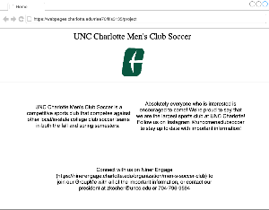
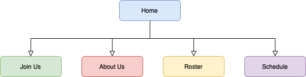

My website will serve as the all-in-one page for anyone intersted in the UNCC Men's Club Soccer team. The
intended users of this site are any students interested in the club team, as well as other schools, or
parents of students. The content in this website will include but not be limited to: a home page, the team
merchandise store, a section detailiing the current officers and their bios, a link to our Niner Engage page
for event information, our team roster, and our game schedule.
My client is the UNCC Men's Club Soccer Team. The team is associated with UNC Charlotte. The club
president's email is zkocher@uncc.edu and his phone number is 704-796-9594.
My Default Page Wireframe

My Site Map Template
